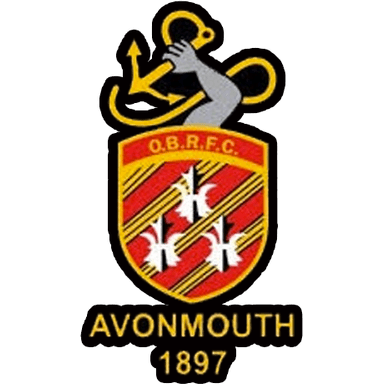

Avonmouth Old Boys RFC
Bristol, Bristol
Shirehampton club at Barracks Lane that produced England international Barry Nelmes.
View Profile
Looking for rugby clubs in Bristol? This page lists 8 Bristol rugby teams, from the professional game to long-established community clubs. As a result, you can compare every rugby club in Bristol that we list in one place.
At the top, Bristol Bears and Bristol Bears Women carry the city's name in the Premiership. Beyond them, however, Bristol has a rich club scene. For example, Clifton RFC dates from 1872 and is the city's oldest club.
In the north of the city, Dings Crusaders RFC play at Shaftesbury Park in Frenchay, while Avonmouth Old Boys RFC are based at Barracks Lane in Shirehampton. Meanwhile, Brislington is home to both Old Redcliffians RFC and Bristol Harlequins RFC.
On the eastern edge of the city, Cleve RFC play at The Hayfields in Mangotsfield. In addition, the club runs junior rugby from the age of six.
First, check how far each ground is from home, because training usually takes place on weekday evenings. Then contact two or three clubs, ask about their teams and try a session.
For clubs beyond the city, explore our guide to South West rugby clubs. It covers every county in the region.
Bristol has rugby union at every level. Bristol Bears play in PREM Rugby and Dings Crusaders in National League 1. Clifton and Old Redcliffians play in National League 2 West, Cleve in Regional 2 Severn, and Avonmouth Old Boys in the Counties leagues. Bristol Harlequins complete the city's community club scene.
| Club | Area | Founded | League 2026-27 |
|---|---|---|---|
| Bristol Bears | Ashton Gate | 1888 | PREM Rugby |
| Dings Crusaders RFC | Bristol | 1897 | National League 1 |
| Clifton RFC | Bristol | 1872 | National League 2 West |
| Old Redcliffians RFC | Bristol | 1918 | National League 2 West |
| Cleve RFC | Mangotsfield | 1922 | Regional 2 Severn |
| Avonmouth Old Boys RFC | Avonmouth | 1897 | Counties 3 Gloucestershire South |
| Bristol Harlequins RFC | Bristol | 1946 | – |
Leagues confirmed from England Rugby team pages on 31 October 2026. Sponsor names (Tribute Ale) omitted.
Pick a Bristol rugby club by how competitive you want to be and which side of the city you live on. Dings, Clifton and Old Redcliffians suit experienced players. Cleve, Avonmouth and Bristol Harlequins are good for newcomers. Clubs in north and east Bristol are easier to reach from the M32 and M4.
Nearby areas worth comparing:
Our directory lists 8 rugby clubs in and around Bristol: all 8 rugby union. The oldest is Clifton RFC, founded in 1872, and 4 of the 8 were formed before 1900. Bristol rugby teams range from a Premiership side to community clubs on the city edge.
| Club | Code | Founded | Town |
|---|---|---|---|
| Clifton RFC | Rugby union | 1872 | Bristol |
| Bristol Bears | Rugby union | 1888 | Bristol |
| Avonmouth Old Boys RFC | Rugby union | 1897 | Bristol |
| Dings Crusaders RFC | Rugby union | 1897 | Bristol |
| Old Redcliffians RFC | Rugby union | 1918 | Bristol |
| Cleve RFC | Rugby union | 1922 | Mangotsfield |
| Bristol Harlequins RFC | Rugby union | 1946 | Bristol |
| Bristol Bears Women | Rugby union | 1984 | Bristol |
Founding years as listed on each club profile in the UK Rugby Club Directory, checked 4 November 2026.
In practice: an older club is not automatically a bigger or stronger one. Check each profile for the club's current league and teams, and ask the club what it runs this season.
To join a rugby club in Bristol, pick two clubs within a short drive, contact them and go to a training session. Most Bristol rugby clubs train on two weekday evenings and play on Saturdays. Once you play regularly, the club registers you with the RFU and asks for a subscription.
Clifton RFC, founded in 1872, is Bristol's oldest rugby club.
Bristol Bears and Bristol Bears Women play in the Premiership and Premiership Women's Rugby. Both are based in the city.
Yes. In fact, most community clubs in Bristol welcome beginners. Contact the club, ask about social or development teams, and go along to training.
We list 8 rugby clubs in Bristol, all rugby union, including Bristol Bears and Bristol Bears Women. Bristol rugby clubs on the edge of the city, such as Cleve in Mangotsfield, are included.
Any community rugby club in Bristol with more than one adult team suits beginners. Contact Cleve, Avonmouth Old Boys or Bristol Harlequins and ask about their lower teams and training nights.
We add new clubs regularly. If your club is not listed yet, register it for free and reach players searching near you.
Register Your Club Free